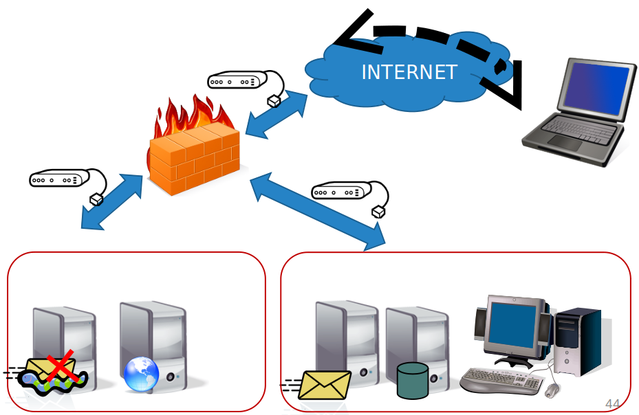

Seguridad en redes
Mikel Egaña Aranguren
Conexión a internet
Confidencialidad e integridad de la información mediante protocolo criptográficos
Sistema autenticación para usuarios
Control de accesos
Supervisión de la utilización de servicios
Garantizar la disponibilidad de la red y los servicios
Controlar los accesos a los equipos
Evitar los intentos de intrusión
Defensa Perimetral
Crear una barrera entre la red interna y el exterior
Canalizar todo el tráfico por un punto monitorizado y protegido
Permitir solo algunas conexiones
Normas menos restrictivas en la red interna
Defensa Perimetral
- Proxys
- Cortafuegos
- Servicios de Detección y Prevención de Intrusos
- Pasarelas antivirus y antispam
- Redes Virtuales Privadas
- UTM
- Honeypots
Riesgos y protección de las redes
Autenticación de entidades: garantiza que una entidad comunicante es quien dice ser
Confidencialidad de datos: Proporciona protección de los datos para evitar que sean revelados accidental o deliberadamente a un usuario no autorizado
Riesgos y protección de las redes
Integridad de datos: Permite al receptor de la información comprobar que la información recibida es exactamente la enviada por el emisor y conocer si esta ha sido modificada
Control de acceso: Evita el uso de los servicios/información por personas no autorizadas
Riesgos y protección de las redes
No repudio:
- Con prueba de origen: El receptor de la información puede probar quién es el emisor
- Con prueba de envío: El receptor/emisor dispone de una prueba de la fecha y hora del envío
- Con prueba de entrega: El emisor puede probar que la información ha sido recibida por el receptor
Ejemplo de no repudio
Sistema de cifrado de whatsapp
Doble click al recibir, en azul leído
No podemos negar haberlo enviado
No pueden negar que lo han recibido
Riesgos y protección de las redes
Disponibilidad: Asegura que la información/recursos van a estar disponibles (van a poder ser accedidos/consultados/usados) cuando sea necesario
Riesgos y protección de las redes
Anonimato: Oculta la identidad de la persona que usa un determinado servicio
Imprescindible en algunos servicios: encuestas, voto electronico, algunas transacciones economicas
Ataques más comunes
Sobre autenticación: interceptación, suplantación
Sobre información: revelación, reenvio, manipulación, repudio
Sobre servicios: denegación, apropiación
Ejemplo de arquitectura sin seguridad
No se filtra el tráfico
Publicación de servicios internos (BD)
No se verifica malware o SPAM
Cliente remoto accede directamente a los servicios
Ejemplo de arquitectura sin seguridad

Firewall
Elemento de red (Hardware o software) donde se define la política de accesos, permitiendo o denegando el tráfico según se definan sus reglas
Dos filosofías distintas de uso:
- Política restrictiva (lista blanca): se deniega todo menos lo que se acepta explícitamente
- Política permisiva (lista negra): se acepta todo menos lo que se deniega explícitamente
Firewall: ¿Contra qué protege?
Contra accesos no autenticados del exterior
Contra tráfico no autorizado desde el exterior
Permite salida autorizada desde el interior
Proporciona un único punto para implantar una política de seguridad y auditoría
Firewall

Firewall: ¿Contra qué no protege?
Contra accesos externos que no pasen por el cortafuegos
Contra ataques desde el interior
Contra virus, troyanos, SPAM
Contra salida de información por otro medio (USBs, correo electrónico, etc.)
Tipos Firewall
De nivel de pasarela: filtra aplicaciones concretas como FTP o Telnet
De capa de red: filtra en función de la IP de origen/destino y del puerto origen/destino
De capa de aplicación: filtra en función del protocolo de la comunicación
Personal: instalado en la propia máquina filtra las conexiones entrantes y salientes de la máquina
Firewall

Zona Desmilitarizada (DMZ, DeMilitarized Zone)
Zona entre la intranet y la Internet donde se ubican los servicios públicos (correo, ftp, etc.) que quedan más expuestos a los problemas de seguridad
Se crea mediante el uso de uno o dos cortafuegos que limita el acceso entre las distintas redes
Desde la zona desmilitarizada no se puede acceder directamente a la intranet
Sistemas de Detección y Prevención de Intrusos (IDS/IPS)
Detecta accesos no autorizados / usos indebidos en la red o en una máquina
Los IDS avisan al administrador (reactivos)
Los IPS los bloquean para que no tengan efecto (proactivos)
Tipos IDS/IPS
HIDPS (Host IDPS): se instala en la máquina y detecta cambios en el sistema operativo y en las aplicaciones
NIDPS (Network IDPS): monitoriza el tráfico de la red local
WIDPS (Wi-Fi IDPS): monitoriza el tráfico inalámbrico
NBA (Network Behaviour Analysis): examina el comportamiento del tráfico de la red
Funcionamiento de un IDS/IPS
Heurística: analiza comportamientos "extraños" y cuando los detecta da la alarma
Firmas: detecta patrones de ataques conocidos (Problema ante ataques nuevos)
IDS/IPS

Pasarelas antivirus y antispam
Analizan el tráfico y filtran los contenidos maliciosos hacia la red interna

Redes Virtuales Privadas (VPN)
Red que usa una infraestructura no segura (Internet) para acceder de manera segura a una red interna
Usadas para la conexión remota a la red interna
VPN EHU
Redes Virtuales Privadas (VPN)
Permite:
- Autenticación y autorización mediante la gestión de usuarios, roles y permisos
- Integridad con el uso de funciones hash
- Confidencialidad puesto que la información viaja cifrada mediante algún algoritmo de encriptación
- No repudio porque los datos se transmiten firmados
Proxy
Programa o dispositivo que realiza las tareas de intermediario
El cliente hace las peticiones al proxy que se encarga de gestionarlas
El uso de un proxy proporciona mayor seguridad durante la navegación porque el servidor desconoce quién se ha conectado realmente
Aísla a los clientes del mundo exterior
Gestión Unificada de Amenazas (UTM)
Dispositivo que aúna múltiples aspectos relacionados con la seguridad de las comunicaciones:
- Cortafuegos
- IDS / IPS
- Pasarela antimalware/antispam
- VPN
Honeypots
Sistema configurado para recibir ataques y estudiar nuevas técnicas
También se usan para recoger muestras de virus y spam
Deben estar especialmente controlados y ajenos a cualquier red interna
Ejemplo arquitectura con seguridad

Ejemplo arquitectura con seguridad
Instalación de cortafuegos:
- DMZ y Red Interna
- Política restrictiva
Instalación de antispam y antivirus
Instalación de NIDS en las tres interfaces
Ejemplo arquitectura con seguridad
Segmentación:
- Público: Web, pasarela antispam/antivirus
- Privado: Base de datos, servidor de correo
Los clientes remotos usan VPN
Ataques más comunes
Sniffing: Interceptación de la información que viaja por la red
Man in the middle: No sólo se intercepta la información, también se puede insertar y modificar a voluntad
Ataques más comunes
Hijacking: Robo de conexiones a un usuario autentificado en el sistema
- IP Hijacking
- Session hijacking
- DNS Hijacking
- ...
Ataques más comunes
Spoofing (Suplantación)
- IP Spoofing
- MAC Spoofing
- DNS Spoofing
- ...